<!DOCTYPE html PUBLIC "-//W3C//DTD XHTML 1.0 Transitional//EN" "http://www.w3.org/TR/xhtml1/DTD/xhtml1-transitional.dtd">
<html xmlns="http://www.w3.org/1999/xhtml">
<head>
<meta name="generator" content="NanoBlogger 3.1" />
<meta name="robots" content="all" />
<meta name="revisit-after" content="31 days" />
<meta http-equiv="Content-Type" content="text/html; charset=iso-8859-1" />

<title>Kurt's Weblog: September 2010 Archives</title>

<link rel="stylesheet" href="../styles/nb_default.css" type="text/css" />
<link rel="shortcut icon" href="../images/favicon.ico" />
<link rel="alternate" type="application/rss+xml" title="RSS 2.0" href="../rss.xml" />
<link rel="alternate" type="application/rss+xml" title="RSS 1.0" href="../index.xml" />
<link rel="alternate" type="application/atom+xml" title="Atom 0.3" href="../atom.xml" />

</head>

<body>

<div id="banner">
<h1><a href="../index.html" accesskey="1">Kurt's Weblog</a></h1>
<span class="description">electronic work log</span>
</div>

<div id="content">

<div class="blog">
<div id="menu">
	<a href="../index.html">Main</a>
</div>
</div>

<div class="blog">
<div class="item">
<a id="e2010-09-28T17_42_54.txt" name="e2010-09-28T17_42_54.txt"></a>
<h2 class="date">09.28.2010 17:42</h2>
<div class="blogbody">
<h3 class="title">Vertical datums at FOSS4G</h3>
<div class="item-description">
Slashgeo has a post of <a
href="http://slashgeo.org/2010/09/28/My-Personal-FOSS4G-2010-Conference-Notes">My
Personal FOSS4G 2010 Conference Notes</a>.  Of special note to
hydrographers: There was a talk by Frank Warmerdam (who is the lead on
gdal and proj) on <b>Vertical datums</b>... a topic that has already
caused me much trouble.  Go check out the post for the rest of the
notes.
<pre>
    * Vertical datums: meteorological data is intrinsically 3D
    * Review of GIS datums basics
    * Tidal datums, local, means, etc
    * Orthometric vertical datums height is measured from the
        Geoid... ngvd29 navd88 igld85 are national and regional
        implementations
    * Geiod, Equipotential gravity surface, varies by up to 100m from
        geocentric ellipsoid.. Global EGM96 
    * Nothing do with directly with ground level by itself
    * No obvious pivot vertical datum in EPSG or anywhere else
    * OGC WKT code for vertical-cs representation
    * No good OGC support of vertical datums, no compound datums which
        would include vertical datum
    * Frank is the main developer of GDAL/OGR, of which we use operationally at CMC
    * Geoid vs ellipsoid heights: most people don't know what they have and use
    * Liblas vertical datum support
    * Planning to add GDAL and Proj.4 support for verticals datums
    * Some software support vertical datums in CSMAP from Autodesk and in Geotoolkit
    * Ellipsoid datums are ok for most GIS applications
</pre>
</div>
</div>

<div class="posted">
<br />Posted by <span class="item-creator">Kurt</span>
| <a class="link" href="2010-09.html#e2010-09-28T17_42_54.txt">Permalink</a>

<!-- <br /><a href="archives/2010-10-01T07_36_59.html#comments">Comments</a> -->
</div>
</div>
<div class="item">
<a id="e2010-09-27T22_01_33.txt" name="e2010-09-27T22_01_33.txt"></a>
<h2 class="date">09.27.2010 22:01</h2>
<div class="blogbody">
<h3 class="title">more more more emacs</h3>
<div class="item-description">
There are just so many features in emacs.  I just ran into <a
href="http://cedet.sourceforge.net/">Collection of Emacs Development
Environment Tools (CEDET)</a>.  See also: <a
href="http://alexott.net/en/writings/emacs-devenv/EmacsCedet.html">A
Gentle introduction to Cedet</a>.  As a part of that is a tool called
<a href="http://www.emacswiki.org/emacs/SpeedBar">SpeedBar</a> (M-x
speedbar).  This gives you a really easy way to navigate projects.
The best part is that I didn't have to do <b>any</b> setup.  And it
knows python too!  Here is what happened when I opened a file in my
libais project.
<br /><br />
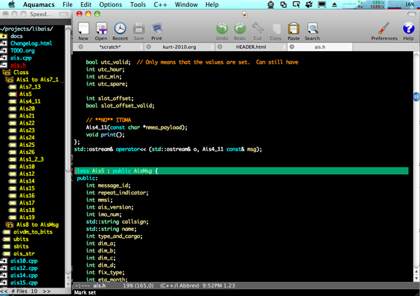
</div>
</div>

<div class="posted">
<br />Posted by <span class="item-creator">Kurt</span>
| <a class="link" href="2010-09.html#e2010-09-27T22_01_33.txt">Permalink</a>

<!-- <br /><a href="archives/2010-09-28T17_42_54.html#comments">Comments</a> -->
</div>
</div>
<div class="item">
<a id="e2010-09-27T16_12_12.txt" name="e2010-09-27T16_12_12.txt"></a>
<h2 class="date">09.27.2010 16:12</h2>
<div class="blogbody">
<h3 class="title">My ERMA talk from last week</h3>
<div class="item-description">
Be sure to follow along with the notes for each slide.
<br /><br />
<div style="width:425px" id="__ss_5299970"><strong style="display:block;margin:12px 0 4px"><a href="http://www.slideshare.net/schwehr/environmental-response-management-application-erma-from-portsmouth-response-to-noaas-geoplatform-gulf-response" title="Environmental Response Management Application (ERMA): From Portsmouth Response to NOAA&#39;s GeoPlatform Gulf Response">Environmental Response Management Application (ERMA): From Portsmouth Response to NOAA&#39;s GeoPlatform Gulf Response</a></strong><object id="__sse5299970" width="425" height="355"><param name="movie" value="http://static.slidesharecdn.com/swf/ssplayer2.swf?doc=2010-09-erma-v14-100927150640-phpapp02&stripped_title=environmental-response-management-application-erma-from-portsmouth-response-to-noaas-geoplatform-gulf-response&userName=schwehr" /><param name="allowFullScreen" value="true"/><param name="allowScriptAccess" value="always"/><embed name="__sse5299970" src="http://static.slidesharecdn.com/swf/ssplayer2.swf?doc=2010-09-erma-v14-100927150640-phpapp02&stripped_title=environmental-response-management-application-erma-from-portsmouth-response-to-noaas-geoplatform-gulf-response&userName=schwehr" type="application/x-shockwave-flash" allowscriptaccess="always" allowfullscreen="true" width="425" height="355"></embed></object><div style="padding:5px 0 12px">View more <a href="http://www.slideshare.net/">presentations</a> from <a href="http://www.slideshare.net/schwehr">Kurt Schwehr</a>.</div></div>
</div>
</div>

<div class="posted">
<br />Posted by <span class="item-creator">Kurt</span>
| <a class="link" href="2010-09.html#e2010-09-27T16_12_12.txt">Permalink</a>

<!-- <br /><a href="archives/2010-09-27T22_01_33.html#comments">Comments</a> -->
</div>
</div>
<div class="item">
<a id="e2010-09-26T21_42_42.txt" name="e2010-09-26T21_42_42.txt"></a>
<h2 class="date">09.26.2010 21:42</h2>
<div class="blogbody">
<h3 class="title">Oceanography book</h3>
<div class="item-description">
I wish I had read this before I went to sea <a href="http://vislab-ccom.unh.edu/~schwehr/TTN136B/">the first time</a> (in which I
was also Chief Scientist)...  thanks to CSHEL for the link.
<br /><br />
Rick Chapman, <a href="http://fermi.jhuapl.edu/book/">The Practical Oceanographer: A Guide to Working At-Sea</a>, 159 pages, 2004.
<br /><br />
<pre>The funny thing is that the most dangerous time for people is not the
same as the most dangerous time for the buoy. When a buoy is swinging
above a deck, it usually won't be in a position to hit anything other
than a scientist or two, and a person colliding with an oceanographic
buoy at a few meters per second does very little damage to the
buoy. The most dangerous time from the buoy's viewpoint is when it is
hanging over the side of the ship, but is not yet in the
water. Typical ship's cranes do not have that much reach and thus a
buoy can bang up against the side of a vessel if it gets swaying when
it is over the side. Once in the water, of course, the water itself
will dampen the motions of the buoy sufficiently where it is not a
danger. The point here is to deploy and recover buoys as far away from
the ship as possible AND to minimize the time that the buoy is out of
the water and next to the ship hull.</pre>
</div>
</div>

<div class="posted">
<br />Posted by <span class="item-creator">Kurt</span>
| <a class="link" href="2010-09.html#e2010-09-26T21_42_42.txt">Permalink</a>

<!-- <br /><a href="archives/2010-09-27T16_12_12.html#comments">Comments</a> -->
</div>
</div>
<div class="item">
<a id="e2010-09-23T17_11_44.txt" name="e2010-09-23T17_11_44.txt"></a>
<h2 class="date">09.23.2010 17:11</h2>
<div class="blogbody">
<h3 class="title">I'm giving a CCOM seminar tomorrow</h3>
<div class="item-description">
Yup, I'm giving a talk tomorrow (Friday) at 3PM over in Chase Ocean
Engineering.  This will be my experiences with ERMA and the Deepwater
Horizon incident.  And no, I never physically went down to the Gulf of
Mexico during the spill... I attacked the issues from New Hampshire.
<br /><br />
<pre><b>Environmental Response Management Application (ERMA):
From Portsmouth Response to NOAA's GeoPlatform Gulf Response</b>
Kurt Schwehr
<!-- -->
In 2007, a small UNH team put together a prototype emergency response
web application using open source tools on a Mac Desktop and later a
Mac Mini.  That system, called Portsmouth Response, was designed to
assist in the first hours of an environmental incident by providing
easy access to basic GIS layers without requiring GIS experts.  This
system generalized and renamed to ERMA, begin deployed as prototypes
in the Caribbean and participating in the Spill Of National
Significance (SONS) drill in New England during March 2010.  Before
the team could evaluate the performance during the SONS drill, the
Deepwater Horizon platform exploded in the Gulf of Mexico on April 20,
2010.  Four days later, the ERMA team was called in for 24x7 support
of NOAA and USCG operations to handle the incident.  ERMA went from
prototype system to being the system providing the Common Operational
Picture (COP) is just a few weeks.  In early June, NOAA setup a system
to mirror the unrestricted datasets for the public on the GeoPlatform
system.  Kurt will describe how ERMA is designed and how it was used
during the Deepwater Horizon oil spill incident.</pre>
<br /><br />
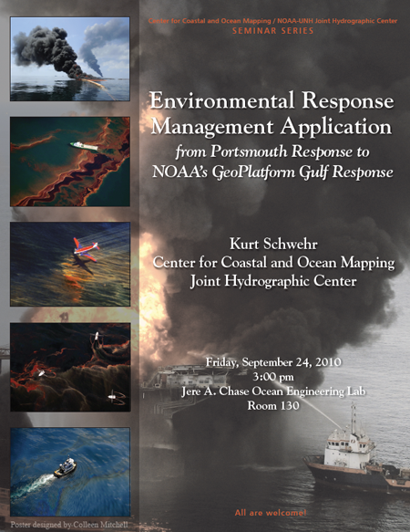
</div>
</div>

<div class="posted">
<br />Posted by <span class="item-creator">Kurt</span>
| <a class="link" href="2010-09.html#e2010-09-23T17_11_44.txt">Permalink</a>

<!-- <br /><a href="archives/2010-09-26T21_42_42.html#comments">Comments</a> -->
</div>
</div>
<div class="item">
<a id="e2010-09-23T11_21_06.txt" name="e2010-09-23T11_21_06.txt"></a>
<h2 class="date">09.23.2010 11:21</h2>
<div class="blogbody">
<h3 class="title">MIT AUV Lab at UNH</h3>
<div class="item-description">
The MIT AUV Lab is here in the Chase Ocean Engineering tank with two of their vehicles.  Here is the version 2.0 surface tethered AUV - Reef Explorer (Rex) V2:
<br /><br />
You can see <a href="http://www.flickr.com/photos/ccom_jhc/sets/72157624902169747/with/5021011531/">more of my pictures</a> on the CCOM/JHC flickr stream.
<br /><br />
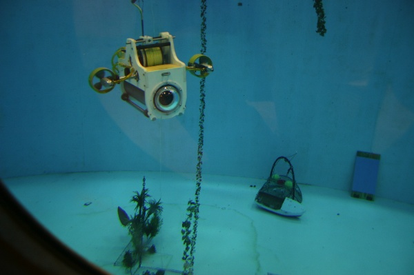
<br /><br />
<object width="480" height="385"><param name="movie" value="http://www.youtube.com/v/8YPEBP_8WDI?fs=1&amp;hl=en_US&amp;color1=0x006699&amp;color2=0x54abd6"></param><param name="allowFullScreen" value="true"></param><param name="allowscriptaccess" value="always"></param><embed src="http://www.youtube.com/v/8YPEBP_8WDI?fs=1&amp;hl=en_US&amp;color1=0x006699&amp;color2=0x54abd6" type="application/x-shockwave-flash" allowscriptaccess="always" allowfullscreen="true" width="480" height="385"></embed></object>
</div>
</div>

<div class="posted">
<br />Posted by <span class="item-creator">Kurt</span>
| <a class="link" href="2010-09.html#e2010-09-23T11_21_06.txt">Permalink</a>

<!-- <br /><a href="archives/2010-09-23T17_11_44.html#comments">Comments</a> -->
</div>
</div>
<div class="item">
<a id="e2010-09-23T10_21_08.txt" name="e2010-09-23T10_21_08.txt"></a>
<h2 class="date">09.23.2010 10:21</h2>
<div class="blogbody">
<h3 class="title">ERMA/GeoPlatform wins award</h3>
<div class="item-description">
<pre>
NOAA's ERMA/GeoPlatform Wins Award (OR&amp;R)
<!-- -->
<a href="http://www.geoplatform.gov/">GeoPlatform</a>, powered by NOAA's <a href="http://gomex.erma.noaa.gov/erma.html">Environmental Response Management
Application</a> (<a href="http://response.restoration.noaa.gov/topic_subtopic_entry.php?RECORD_KEY%28entry_subtopic_topic%29=entry_id,subtopic_id,topic_id&entry_id%28entry_subtopic_topic%29=789&subtopic_id%28entry_subtopic_topic%29=8&topic_id%28entry_subtopic_topic%29=1">ERMA</a>), has won a Government Computer News
Award. GeoPlatform was instrumental in the government's Deepwater
Horizon oil spill response and restoration efforts. During the crisis,
NOAA scaled up the capabilities of ERMA — a geographic information
system tool that on its own could not handle the magnitude of the
response — to handle more than 600 data layers and feeds, many of them
updated in real time. The resulting GeoPlatform site's data ranges
from oil spill trajectories to wildlife observations to the locations
of research and response vessels. In addition to providing a common
picture for all response organizations, the project potentially saved
millions of dollars that would have been spent on a new
solution. GeoPlatform/ERMA will be one of 20 projects honored at a
ceremony in Virginia on Oct. 27.</pre>
The layer counts in ERMA show that the restricted system for the Gulf
of Mexico has had over 7000 layers.
<br /><br />
Here is a sample screen shot with funky evidence of my involvement.
Someone needs to change my icon to have proper transparency so that
there is not a white square around the water level icon.
<br /><br />
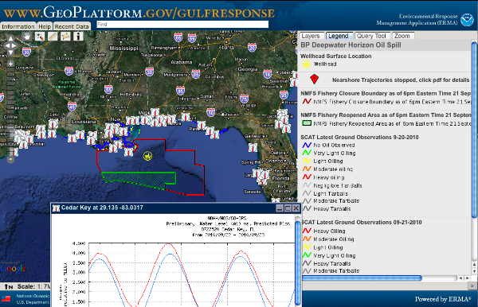
</div>
</div>

<div class="posted">
<br />Posted by <span class="item-creator">Kurt</span>
| <a class="link" href="2010-09.html#e2010-09-23T10_21_08.txt">Permalink</a>

<!-- <br /><a href="archives/2010-09-23T11_21_06.html#comments">Comments</a> -->
</div>
</div>
<div class="item">
<a id="e2010-09-22T18_03_45.txt" name="e2010-09-22T18_03_45.txt"></a>
<h2 class="date">09.22.2010 18:03</h2>
<div class="blogbody">
<h3 class="title">MS PowerPoint - state: stuck</h3>
<div class="item-description">
Thanks power point...
<pre>PID    COMMAND      %CPU TIME     #TH   #WQ  #POR #MREG RPRVT  RSHRD  RSIZE  VPRVT  VSIZE  PGRP  PPID  STATE    UID  FAULTS    COW    MSGSENT
0-     kernel_task  8.2  08:28.77 72/11 0    2    780   18M    0B     295M+  21M    2410M  0     0     running  0    4670      7      63325690+
1215-  Microsoft Po 4.5  08:12.17 5     1    163  2148  340M-  131M+  526M   472M-  1629M  1215  157   <b>stuck</b>    501  13062852+ 4625   4406549  
82527  top          2.5  00:00.58 1/1   0    24   33    1924K  264K   2500K  19M    2378M  82527 81338 running  0    11018+    57     586718+
247    Terminal     1.0  00:17.38 5     1    113  148   10M    34M    27M    92M    2784M  247   157   sleeping 501  124427+   897    459682+
79     WindowServer 0.9  07:54.91 11    1    375  1512+ 22M+   135M   150M+  157M+  2989M+ 79    1     sleeping 88   1731508+  14788  11840169+</pre>
</div>
</div>

<div class="posted">
<br />Posted by <span class="item-creator">Kurt</span>
| <a class="link" href="2010-09.html#e2010-09-22T18_03_45.txt">Permalink</a>

<!-- <br /><a href="archives/2010-09-23T10_21_08.html#comments">Comments</a> -->
</div>
</div>
<div class="item">
<a id="e2010-09-22T15_56_32.txt" name="e2010-09-22T15_56_32.txt"></a>
<h2 class="date">09.22.2010 15:56</h2>
<div class="blogbody">
<h3 class="title">Will this actually help NOAA?</h3>
<div class="item-description">
<a
href="http://www.noaanews.noaa.gov/stories2010/20100922_model.html">NOAA
Announces New Information Technology Business Model - Awards Contracts
to Ten Small Businesses</a>
<br /><br />
In this article, there is no mention of open software and a
focus on using contractors to improve existing open software.  Nor is
there anything about information capture.  There are a lot of smart
NOAA employees figuring things out all the time.  One size fits all is
fine for maybe 80% of an office organization, but here we have tons of
people in the field, on ships, and in planes everyday.  What about
this is going to make them more productive and less stressed?  Little
things can end up having a big long term impact.  For example,
defaulting to teaching python over matlab (sorry MathWorks), means
that anyone in NOAA who needs to script a task can without added cost
to the organization and scripts can be reused throughout the
institution.  Then the few cases that require something specific from
matlab can go get matlab.
<pre>NOAA today announced plans to implement a new information technology
business model designed to boost efficiency, reduce costs and make
better use of taxpayer dollars. Called NOAALink, the model draws upon
the innovation and expertise of America's small businesses to
standardize information technologies and solutions across the agency
and ensure better, more cost-effective service.
<!-- -->
Following extensive market outreach and a competitive acquisition
process, NOAA has awarded contracts to ten small businesses, including
firms participating in "8a", the federal Small Business Administration
initiative created to help small businesses compete in the American
economy and access the federal procurement market.
<!-- -->
The NOAALink program will span 15 service areas within NOAA, including
end-user services, data centers, application development, disaster
recovery, and security. NOAALink will help drive efficiency and
economy of scale on many levels, including:
<!-- -->
    * reducing the number of help desks and high cost of multiple,
      low-value software applications;
    * standardizing computer purchases;
    * automating processes to improve IT services and workforce
      productivity; and
    * streamlining ordering to benefit from consistency and volume
      procurement.
<!-- -->
The NOAALink awards advance President Obama's and Commerce Secretary
Gary Locke's commitment to improve federal contracting by applying
best practices for better services at reduced prices. "This is the
first of several strategic sourcing initiatives that NOAA is taking to
strengthen service and cut costs," said Mitchell J. Ross, director of
the NOAA Acquisition and Grants Office.
<!-- -->
"Our goal is to improve agency performance, establish quality
relationships with suppliers, and create efficiencies by fully
leveraging NOAA's buying power, and NOAALink does that," said Joseph
Klimavicz, NOAA chief information officer.
<!-- -->
Early this year NOAA awarded the initial NOAALink contract to The
Ambit Group in Reston, Va., for strategic planning and project
management.  Source selection for large firms will continue until
Spring 2011.
...</pre>
</div>
</div>

<div class="posted">
<br />Posted by <span class="item-creator">Kurt</span>
| <a class="link" href="2010-09.html#e2010-09-22T15_56_32.txt">Permalink</a>

<!-- <br /><a href="archives/2010-09-22T18_03_45.html#comments">Comments</a> -->
</div>
</div>
<div class="item">
<a id="e2010-09-22T13_04_56.txt" name="e2010-09-22T13_04_56.txt"></a>
<h2 class="date">09.22.2010 13:04</h2>
<div class="blogbody">
<h3 class="title">slogcxx pushed to github</h3>
<div class="item-description">
I just pushed my C++ logging library to github: <a
href="http://github.com/schwehr/slogcxx">slogcxx</a>.  This has Brian
Calder's additions to allow for the use of Boost's threading
facilities.  Brian has been using slogcxx for some server code in
Code for a while.  Nice!  Reviewing the code with Brian, I am 
surprised at how well the code has stood up.  It's not perfect, but it
certainly gets the job done.
<br /><br />
Do remember that slogcxx is a pretty small/limited project.  You might
want to consider using <a
href="http://boost-log.sourceforge.net/libs/log/doc/html/index.html">boost.log</a>
instead, but it is much more complicated than slogcxx.
<br /><br />
Happy hacking.
<br /><br />

</div>
</div>

<div class="posted">
<br />Posted by <span class="item-creator">Kurt</span>
| <a class="link" href="2010-09.html#e2010-09-22T13_04_56.txt">Permalink</a>

<!-- <br /><a href="archives/2010-09-22T15_56_32.html#comments">Comments</a> -->
</div>
</div>
<div class="item">
<a id="e2010-09-22T11_41_54.txt" name="e2010-09-22T11_41_54.txt"></a>
<h2 class="date">09.22.2010 11:41</h2>
<div class="blogbody">
<h3 class="title">Removing passwords from PDFs</h3>
<div class="item-description">
As a reminder to everyone out there... PDF passwords are not very
strong security.  Passwords are crackable if you are willing to wait a
bit and if you have the password, you can make an unprotected version
(that will also happily print).  However, I encourage people to
support good authors.  By purchasing a book on a tool that you like,
you are encouraging more books to be written on that topic (e.g. I've
got a bunch of Django books).
<br /><br />
Removing the password is as simple as this:
<pre><b>gs -sDEVICE=pdfwrite -dNOPAUSE -sOutputFile=foo.pdf -sPDFPassword=my-password file-with-password.pdf</b></pre>
</div>
</div>

<div class="posted">
<br />Posted by <span class="item-creator">Kurt</span>
| <a class="link" href="2010-09.html#e2010-09-22T11_41_54.txt">Permalink</a>

<!-- <br /><a href="archives/2010-09-22T13_04_56.html#comments">Comments</a> -->
</div>
</div>
<div class="item">
<a id="e2010-09-17T12_09_40.txt" name="e2010-09-17T12_09_40.txt"></a>
<h2 class="date">09.17.2010 12:09</h2>
<div class="blogbody">
<h3 class="title">LogMeIn locking up Firefox</h3>
<div class="item-description">
I have been frustrated with Firefox / Logmein locking up on just one
of my macs.  (Note: I do not like logmein).   All the other macs were fine.
The info in /var/log/system.log was:
<pre>Sep 17 11:46:17 snipe firefox-bin[91421]: Same cached value:LogMeIn Plugin 1.0.0.497 actual value:LogMeIn Plugin 1.0.0.497
Sep 17 11:46:17 snipe [0x0-0x3ca3ca].org.mozilla.firefox[0]: 2010-09-17 11:46:17.413 firefox-bin[91421:903] Same cached value:LogMeIn Plugin 1.0.0.497 actual value:LogMeIn Plugin 1.0.0.497
Sep 17 11:46:28 snipe [0x0-0x3ca3ca].org.mozilla.firefox[0]: ### MRJPlugin:  getPluginBundle() here. ###
Sep 17 11:46:29 snipe [0x0-0x3ca3ca].org.mozilla.firefox[0]: ### MRJPlugin:  CFBundleGetBundleWithIdentifier() succeeded. ###
Sep 17 11:46:29 snipe [0x0-0x3ca3ca].org.mozilla.firefox[0]: ### MRJPlugin:  CFURLGetFSRef() succeeded. ###
Sep 17 11:46:31 snipe firefox-bin[91421]: Java_registerNatives(): JavaPluginCocoa.bundle's registerNatives() failed [JavaNativeException: sun.misc.ServiceConfigurationError: javax.imageio.spi.ImageOutputStreamSpi: Provider com.sun.media.imageioimpl.stream.ChannelImageOutputStreamSpi not found]
Sep 17 11:46:31 snipe [0x0-0x3ca3ca].org.mozilla.firefox[0]: 2010-09-17 11:46:31.164 firefox-bin[91421:1350b] Java_registerNatives(): JavaPluginCocoa.bundle's registerNatives() failed [JavaNativeException: sun.misc.ServiceConfigurationError: javax.imageio.spi.ImageOutputStreamSpi: Provider com.sun.media.imageioimpl.stream.ChannelImageOutputStreamSpi not found]</pre>
I finally found the sollution: <a href="http://osdir.com/ml/gis.gvsig.english/2008-03/msg00071.html">gvSIG installed a Java jar that crashes firefox</a>.  Here is what I did:
<pre><b>cd ~/Library/Java/Extensions
rm jai_imageio.jar</b></pre>
I had installed gvSIG on just that machine to give it a try.  Now Logmein works just fine in firefox.
</div>
</div>

<div class="posted">
<br />Posted by <span class="item-creator">Kurt</span>
| <a class="link" href="2010-09.html#e2010-09-17T12_09_40.txt">Permalink</a>

<!-- <br /><a href="archives/2010-09-22T11_41_54.html#comments">Comments</a> -->
</div>
</div>
<div class="item">
<a id="e2010-09-17T09_48_26.txt" name="e2010-09-17T09_48_26.txt"></a>
<h2 class="date">09.17.2010 09:48</h2>
<div class="blogbody">
<h3 class="title">remounting an ejected drive</h3>
<div class="item-description">
If you unmount a drive from your Mac and want to mount it back onto
the system without unplugging and replugging it, here is how.  You might do this to stop backups for a day during super intensive compute job that generates lots of files that you have no interest in backing up or you just make a mistake and eject a drive.
<pre><b>diskutil list</b>
/dev/disk0
   #:                       TYPE NAME                    SIZE       IDENTIFIER
   0:      GUID_partition_scheme                        *320.1 GB   disk0
   1:                        EFI                         209.7 MB   disk0s1
   2:                  Apple_HFS Macintosh HD            319.7 GB   disk0s2
/dev/disk1
   #:                       TYPE NAME                    SIZE       IDENTIFIER
   0:      GUID_partition_scheme                        *640.1 GB   disk1
   1:                        EFI                         209.7 MB   disk1s1
   2:                  Apple_HFS Time Machine Backups    639.8 GB   disk1s2
/dev/disk2
   #:                       TYPE NAME                    SIZE       IDENTIFIER
   0:     Apple_partition_scheme                        *84.5 MB    disk2
   1:        Apple_partition_map                         32.3 KB    disk2s1
   2:                  Apple_HFS Google Chrome           84.4 MB    disk2s2
<b>diskutil mount disk1s2</b>
Volume Time Machine Backups on disk1s2 mounted</pre>
That Google Chrome partition is a lot weird.
<pre><b>df -h</b>
Filesystem            Size  Used Avail Use% Mounted on
/dev/disk0s2          298G   93G  206G  31% /
devfs                 113K  113K     0 100% /dev
/dev/disk2s2           81M   81M     0 100% /private/tmp/UpdateEngine-mount.LDI5zbOjpk
/dev/disk1s2          596G  116G  481G  20% /Volumes/Time Machine Backups</pre>
That looks like it has something to do with Google's update process, but I don't see anything show up in the finder.  Even stranger that I don't have it on other machines.  It would have been nice if the mac had just stuck with the traditional unix mount command for these kinds of things.
<br /><br />
Also, if you are annoyed that the Mac indexes backup drives (and other
portable drives), you can tell it not to index them.  
<pre><b>touch /Volumes/Time\ Machine\ Backups/.metadata_never_index</b></pre>
</div>
</div>

<div class="posted">
<br />Posted by <span class="item-creator">Kurt</span>
| <a class="link" href="2010-09.html#e2010-09-17T09_48_26.txt">Permalink</a>

<!-- <br /><a href="archives/2010-09-17T12_09_40.html#comments">Comments</a> -->
</div>
</div>
<div class="item">
<a id="e2010-09-16T18_42_43.txt" name="e2010-09-16T18_42_43.txt"></a>
<h2 class="date">09.16.2010 18:42</h2>
<div class="blogbody">
<h3 class="title">OrbComm global S-AIS on Google Earth</h3>
<div class="item-description">
It's a bummer that there are no details like how many receivers were
used, how long of a time period this covers, how many messages were
received, and how many ships were detected.  However, it's still an
interesting view.
<br /><br />
<object width="480" height="385"><param name="movie" value="http://www.youtube.com/v/ARMDCEpGKZk?fs=1&amp;hl=en_US"></param><param name="allowFullScreen" value="true"></param><param name="allowscriptaccess" value="always"></param><embed src="http://www.youtube.com/v/ARMDCEpGKZk?fs=1&amp;hl=en_US" type="application/x-shockwave-flash" allowscriptaccess="always" allowfullscreen="true" width="480" height="385"></embed></object>
</div>
</div>

<div class="posted">
<br />Posted by <span class="item-creator">Kurt</span>
| <a class="link" href="2010-09.html#e2010-09-16T18_42_43.txt">Permalink</a>

<!-- <br /><a href="archives/2010-09-17T09_48_26.html#comments">Comments</a> -->
</div>
</div>
<div class="item">
<a id="e2010-09-16T10_59_38.txt" name="e2010-09-16T10_59_38.txt"></a>
<h2 class="date">09.16.2010 10:59</h2>
<div class="blogbody">
<h3 class="title">Geospatial Revolution / Ep 1</h3>
<div class="item-description">
<a href="http://www.openstreetmap.org/">OpenStreetMap (OSM)</a>, specifically with Haiti (<a href="http://www.ushahidi.com/platform">Ushahidi</a>), is mentioned about 2/3rds of the way through the video.
<br /><br />
<a href="http://geospatialrevolution.psu.edu/episode1/complete">Penn State's Geospatial Revolution</a>
<br /><br />
<object width="640" height="385"><param name="movie" value="http://www.youtube.com/v/EwVig_cAU7U?fs=1&amp;hl=en_US"></param><param name="allowFullScreen" value="true"></param><param name="allowscriptaccess" value="always"></param><embed src="http://www.youtube.com/v/EwVig_cAU7U?fs=1&amp;hl=en_US" type="application/x-shockwave-flash" allowscriptaccess="always" allowfullscreen="true" width="640" height="385"></embed></object>
</div>
</div>

<div class="posted">
<br />Posted by <span class="item-creator">Kurt</span>
| <a class="link" href="2010-09.html#e2010-09-16T10_59_38.txt">Permalink</a>

<!-- <br /><a href="archives/2010-09-16T18_42_43.html#comments">Comments</a> -->
</div>
</div>
<div class="item">
<a id="e2010-09-15T10_56_05.txt" name="e2010-09-15T10_56_05.txt"></a>
<h2 class="date">09.15.2010 10:56</h2>
<div class="blogbody">
<h3 class="title">Uninstalling MacKeeper</h3>
<div class="item-description">
Tech support at MacKeeper said I could just throw MacKeeper in the
trash, reboot, and empty the trash to get rid of MacKeeper, and reboot
again.  I also got rid of files in kept in ~/Library.  Specifically,
it left a Helper app in there that it was running.  But, my system.log
was filling up with this:
<pre>Sep 15 10:09:45 snipe com.apple.launchd.peruser.501[153] (com.zeobit.MacKeeper.Helper[35234]): Exited with exit code: 1
Sep 15 10:09:45 snipe com.apple.launchd.peruser.501[153] (com.zeobit.MacKeeper.Helper): Throttling respawn: Will start in 10 seconds
Sep 15 10:09:49 snipe login[35236]: USER_PROCESS: 35236 ttys003
Sep 15 10:09:55 snipe com.apple.launchd.peruser.501[153] (com.zeobit.MacKeeper.Helper[35364]): posix_spawn("/Users/schwehr/Library/Application Support/MacKeeper/Helper.app/Contents/MacOS/Helper", ...): No such file or directory
Sep 15 10:09:55 snipe com.apple.launchd.peruser.501[153] (com.zeobit.MacKeeper.Helper[35364]): Exited with exit code: 1
Sep 15 10:09:55 snipe com.apple.launchd.peruser.501[153] (com.zeobit.MacKeeper.Helper): Throttling respawn: Will start in 10 seconds</pre>
I went into the man page for launchctl and figured this out to stop the mac from trying to run the helper:
<pre><b>launchctl list | grep -i zeobit</b>
-	1	com.zeobit.MacKeeper.Helper
<b>launchctl remove com.zeobit.MacKeeper.Helper</b></pre>
I think that totally gets rid of the app.
</div>
</div>

<div class="posted">
<br />Posted by <span class="item-creator">Kurt</span>
| <a class="link" href="2010-09.html#e2010-09-15T10_56_05.txt">Permalink</a>

<!-- <br /><a href="archives/2010-09-16T10_59_38.html#comments">Comments</a> -->
</div>
</div>
<div class="item">
<a id="e2010-09-12T08_42_42.txt" name="e2010-09-12T08_42_42.txt"></a>
<h2 class="date">09.12.2010 08:42</h2>
<div class="blogbody">
<h3 class="title">Neptune science instruments iPad app</h3>
<div class="item-description">
<a href="http://www.macresearch.org/mobile-science-apps">MacResearch
had a link to <a
href="http://homepage.mac.com/swain/Macinchem/iPhone/mobile_apps.html">Macs
in Chemistry - Mobile Science</a> that has a few apps that are
relevant to the to people like me. However, the majority are too far
off into Chemstry and Biology to be very useful to my areas of
research.  I took a quick look for what might be out there of interest
and ran into the <a href="http://www.neptunecanada.ca/">Neptune Canada</a> project's iPad app.  It's a great start to
what can be done.  I hope they take this app a lot farther.
<br /><br />

<br /><br />
The main interface is unfortunately just a list of instruments.  Not a
great way for people to get to know the system, but probably okay for
scientists already working with the system.
<br /><br />
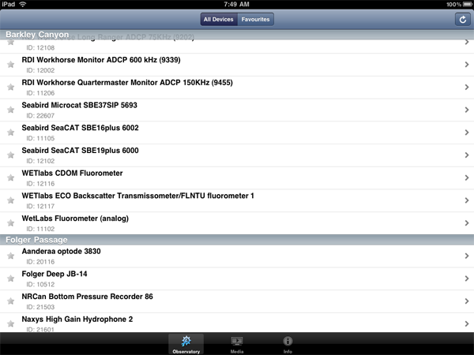
<br /><br />
It took me a few minutes, but I finally found a sensor where I might
actually understand what is going on.  Here is the sound velocity at a
station over the last week.
<br /><br />
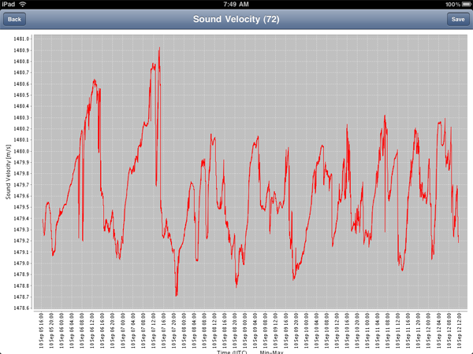
<br /><br />
There are live video links, but it would be much better to get a list of images that mark change events in the image or related sensors.
<br /><br />
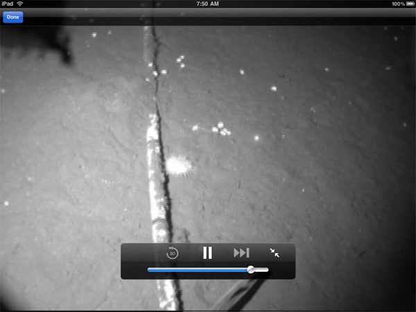
</div>
</div>

<div class="posted">
<br />Posted by <span class="item-creator">Kurt</span>
| <a class="link" href="2010-09.html#e2010-09-12T08_42_42.txt">Permalink</a>

<!-- <br /><a href="archives/2010-09-15T10_56_05.html#comments">Comments</a> -->
</div>
</div>
<div class="item">
<a id="e2010-09-09T19_24_46.txt" name="e2010-09-09T19_24_46.txt"></a>
<h2 class="date">09.09.2010 19:24</h2>
<div class="blogbody">
<h3 class="title">Google Scribe - predictive writing</h3>
<div class="item-description">
Google's <a href="http://scribe.googlelabs.com/">scribe</a> is a
predictive autocomplete tool very much like Visual Studio or XCode
where the editor gives you suggetions as you get part way through the
text.
<br /><br />
Kevin Marks has looked at some of the issues: <a href="http://epeus.blogspot.com/2010/09/if-google-predicts-your-future-will-it.html">If Google predicts your future, will it be a cliche?</a>
<br /><br />
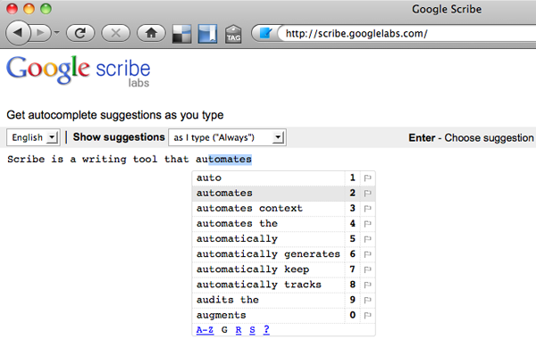
<br /><br />
I am really enjoying <a href="http://www.mediafly.com/">MediaFly</a>
on the <a href="http://www.roku.com/">Roku</a>, where I was watching
about the new Google Realtime Search and Google Scribe: <a
href="http://twit.tv/twig59">This Week In Google 59: Gina Loves
Justin</a>.  Lots of good geek content in addition to CNN and other
videos.
</div>
</div>

<div class="posted">
<br />Posted by <span class="item-creator">Kurt</span>
| <a class="link" href="2010-09.html#e2010-09-09T19_24_46.txt">Permalink</a>

<!-- <br /><a href="archives/2010-09-12T08_42_42.html#comments">Comments</a> -->
</div>
</div>
<div class="item">
<a id="e2010-09-09T11_33_44.txt" name="e2010-09-09T11_33_44.txt"></a>
<h2 class="date">09.09.2010 11:33</h2>
<div class="blogbody">
<h3 class="title">Dealing with reality</h3>
<div class="item-description">
Dale pointed out a nice article in IEEE Spectrum:  <a href="http://spectrum.ieee.org/telecom/security/cyber-armageddon">OPINION: Cyber Armageddon, by Robert W. Lucky reflects on the latest fashion in end-of-the-world scenarios</a>.  Two good quotes:
<pre>If your data is valuable enough, there is almost nothing you can do to
provide total security against an expert adversary. Simply put, the
attacker may be smarter than anyone you have defending the network...</pre>
<pre>I think that any objective analysis of the situation would
conclude that perfect security is not possible.... My own belief is
that it can only be the acknowledgement of fallibility, the acceptance
of risk and the preparedness for continued operation under degraded
cyber conditions....</pre>
An example of the irrationality of what we are doing is in IMO's Circular 289 (emphasis added by me):
<pre>The data is intended for use by the shore-based authority with the
ability to relay this information on a selective and secure basis to
the relevant national authorities responsible for receiving reports
(i.e. Maritime Reporting System) and for VTS, SAR, pollution response,
fire-fighting and other shore-based activities in response to
accidents or incidents. <b>The competent authority is responsible for
ensuring that necessary measures are applied to secure the appropriate
confidentiality of information.</b></pre> 
So, the ship has just broadcast this information <b>in the clear and
on a public channel that is required listening for many ships</b> that
they are carrying X tons of hazardous material.  Now the shore side has to keep
this information confidential.  That does not make sense.
</div>
</div>

<div class="posted">
<br />Posted by <span class="item-creator">Kurt</span>
| <a class="link" href="2010-09.html#e2010-09-09T11_33_44.txt">Permalink</a>

<!-- <br /><a href="archives/2010-09-09T19_24_46.html#comments">Comments</a> -->
</div>
</div>
<div class="item">
<a id="e2010-09-08T21_17_42.txt" name="e2010-09-08T21_17_42.txt"></a>
<h2 class="date">09.08.2010 21:17</h2>
<div class="blogbody">
<h3 class="title">django 1.2.2 - security update</h3>
<div class="item-description">
If you are using django through fink, you should do a "fink selfupdate", "fink list -o", and update your fink django packages to 1.2.2.
<br /><br />
<a href="http://www.djangoproject.com/weblog/2010/sep/08/security-release/">Security release issued</a>
<br /><br />
<pre>As of the 1.2 release, the core Django framework includes a
system, enabled by default, for detecting and preventing cross-site
request forgery (CSRF) attacks against Django-powered
applications. Previous Django releases provided a different,
optionally-enabled system for the same purpose.
<!-- -->
The Django 1.2 CSRF protection system involves the generation of a
random token, inserted as a hidden field in outgoing forms. The same
value is also set in a cookie, and the cookie value and form value are
compared on submission.
<!-- -->
The provided template tag for inserting the CSRF token into forms --
{% csrf_token %} -- explicitly trusts the cookie value, and displays
it as-is. Thus, an attacker who is able to tamper with the value of
the CSRF cookie can cause arbitrary content to be inserted, unescaped,
into the outgoing HTML of the form, enabling cross-site scripting
(XSS) attacks.
...</pre>
</div>
</div>

<div class="posted">
<br />Posted by <span class="item-creator">Kurt</span>
| <a class="link" href="2010-09.html#e2010-09-08T21_17_42.txt">Permalink</a>

<!-- <br /><a href="archives/2010-09-09T11_33_44.html#comments">Comments</a> -->
</div>
</div>
<div class="item">
<a id="e2010-09-08T11_33_19.txt" name="e2010-09-08T11_33_19.txt"></a>
<h2 class="date">09.08.2010 11:33</h2>
<div class="blogbody">
<h3 class="title">BP's Deepwater Horizon incident report</h3>
<div class="item-description">
BP just release their <a
href="http://www.bp.com/sectiongenericarticle.do?categoryId=9034902&contentId=7064891">results
from the internal investigation</a>.  The report, video, and slides
are a great resource for learning about processes on an oil rig.
<br /><br />
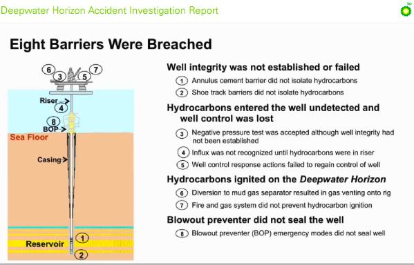
<br /><br />
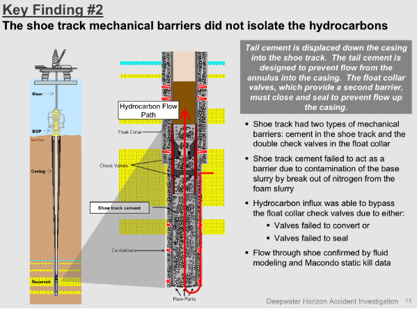
</div>
</div>

<div class="posted">
<br />Posted by <span class="item-creator">Kurt</span>
| <a class="link" href="2010-09.html#e2010-09-08T11_33_19.txt">Permalink</a>

<!-- <br /><a href="archives/2010-09-08T21_17_42.html#comments">Comments</a> -->
</div>
</div>
<div class="item">
<a id="e2010-09-08T08_05_06.txt" name="e2010-09-08T08_05_06.txt"></a>
<h2 class="date">09.08.2010 08:05</h2>
<div class="blogbody">
<h3 class="title">Bad idea - reducing the precision of x and y</h3>
<div class="item-description">
I know that this post will not influence those who make the final
call, but I have to state my thoughts on this issue.
<br /><br />
There has been a recent move to reduce the number of bits to specify
the longitude and latitude for a point or circular area notice in the
AIS broadcast binary message (DAC:1 FI:22).  The argument is that
having more bits for these coordinates would imply to the mariner more
precision that is really there for a point.  I have several reasons
why I would argue strongly that this makes no sense.
<br /><br />
First: we often know the location of the point in question to cm
accuracy.  Positioning systems are only getting better over time.
Buoys are starting have RTK GPS on board.  There have already been
deployments of buoys with that capability.
<br /><br />
Second: This is about positioning point and areas on a chart.  If we
do not have the resolution to place points where they need to be, we
may run into trouble.
<br /><br />
Third: Based on the reasoning of mariners being unable to understand
positioning accuracy, we could do the same thing to NOAA and make all
buoys, lines, and marks only be able to be positioned on a grid of 17
meters.  Imagine canals that have their width changed by 9 meters.  If
someone relies on the that, there will be trouble with ships being
built so that they just barely fit.
<br /><br />
Fourth: This is a presentation issue being solved by hobbling the
network protocol.  Why not just state in the specification that from
2010-2015, electronic chart systems should display the coordinates of
points on the chart to only 3 decimal places on the minutes (e.g. DD
MM.MMM), but let them place the point or area on the chart to the full
precision of the network protocol.
<br /><br />
Finally: The network protocol description does not state the
motiviation beyond the changes.  It is important to include this kind
of information when writing a specification to that software engineers
understand what they are coding and designers of other messages can
decide if they have the same needs.  New messages look to old messages
for guidance on how things should be done.  The <b>why</b> needs to be
better captured.
<br /><br />
I realize that the standards committee is going to dismiss my
arguments - many of them have heard me say this before and dismissed
what I said then.  Therefore, I don't expect to influence the current
IMO Circ 289, but I hope to influence designers of future AIS binary
messages and other geospatially enabled data transfer formats.  I
encourage other people on the standards committees to post their ideas
and thought processes.
</div>
</div>

<div class="posted">
<br />Posted by <span class="item-creator">Kurt</span>
| <a class="link" href="2010-09.html#e2010-09-08T08_05_06.txt">Permalink</a>

<!-- <br /><a href="archives/2010-09-08T11_33_19.html#comments">Comments</a> -->
</div>
</div>
<div class="item">
<a id="e2010-09-07T08_23_52.txt" name="e2010-09-07T08_23_52.txt"></a>
<h2 class="date">09.07.2010 08:23</h2>
<div class="blogbody">
<h3 class="title">Comparing the "old" Nav 55 and IMO Circ 289 AIS binary messages</h3>
<div class="item-description">
<b>NOTE for the US</b>: Just got the latest US scituation.  The USCG
has unofficially said that it will not be using the IMO circular 289
message.  For now, we are going to use DAC 366 and FI 22 for Cape Cod.
This is a regional message for the United States. 
If the international standard is harmonized, then the USCG may tell me
to switch to using DAC 1 and FI 22.  The old pair that I've been transmitting
is DAC 366 and FI 34.
<br /><br />
<b>NOTE for the non-US world</b>: Other countries are welcome to
implement this as 366/22.  Please do not replicate the same message
into your country's DAC.  It is okay to use DAC/FI pairs from other
countries.  Your country just has to get the "competent authority" to
say as much.
<br /><br />
This post refers to the area notice definitions in the <a
href="http://vislab-ccom.unh.edu/~schwehr/papers/2009-Nav55-CG-AIX-Report-Annex1.pdf">old
Nav 55 documentation</a> and the <a
href="http://vislab-ccom.unh.edu/~schwehr/papers/2010-IMO-SN.1-Circ.289.pdf">new
IMO Circular 289</a>.  Both link to PDFs from my papers folder.
<br /><br />
I am finally getting to implement the IMO Area Notice AIS Binary Message (aka zone timed notices).  Here is my summary of changes:
<br /><br />
<b>Same/Compatible:</b>
<ul>
<li>The DAC and FI are still 1and 22 respectively.</li>
<li>The preamble through the duration is the same.  There are minor naming changes, but all code should match.</li>
</ul>
<b>Different/Incompatible:</b>
<ul>
<li>All sub-area blocks have shrunk from 90 to 87 bits.</li>
<li>Position coordinates have shrunk.  Longitude went from 28 to 25 bits and Latitude went from 27 to 24 bits.  The takes position from increments of 1.7 meters to 17 meters.</li>
<li>There is a new Precision field that talk about the number of decimal places to truncate.  I will set this to 4 and just ignore it in my code.</li>
<li>For polylines and polygons, the distances shrank from 11 bits to 10 bits</li>
</ul>
The preliminary text is pretty much the same.  The base preamble of
the area notice is the same.  The difference comes in the sub-areas.
Here is the 2009 Nav 55 Circle or point.  Note the decrease in number
of bits for the longitude and latitude along with the addition of the
"Precision" field.  What exactly are we supposed to do with this?  I
presume they meant rounding on the decimal minutes.  For my purposes,
I am going to just always set this to 4.  Is this just for
presentation?  IMO definitely needs to talk about the motivation and purpose
of this field.
<br /><br />
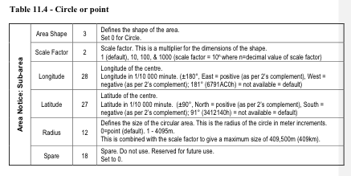
<br /><br />
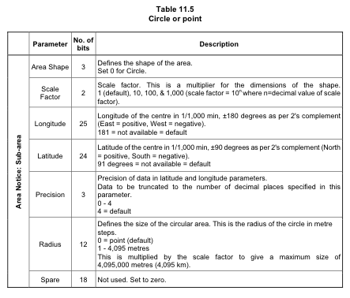
<br /><br />
Looking at the Notice Description table, some of the text has changed
in the tables.  We will still be using 0 for no whales detected and 1
for whales detected/reduce speed for the Boston approaches.  The older text
that I originally coded to was:
<pre>0: 'Caution Area: Marine mammals NOT observed',
1: 'Caution Area: Marine mammals in area - Reduce Speed',
2: 'Caution Area: Marine mammals in area - Stay Clear',
3: 'Caution Area: Marine mammals in area - Report Sightings',
4: 'Caution Area: Protected Habitat - Reduce Speed',
5: 'Caution Area: Protected Habitat - Stay Clear',
6: 'Caution Area: Protected Habitat - No fishing or anchoring'
...</pre>
The new text is pretty close:
<pre>0 Caution Area: Marine mammals habitat
1 Caution Area: Marine mammals in area - reduce speed
2 Caution Area: Marine mammals in area - stay clear
3 Caution Area: Marine mammals in area - report sightings
4 Caution Area: Protected habitat - reduce speed
5 Caution Area: Protected habitat - stay clear
6 Caution Area: Protected habitat - no fishing or anchoring
...</pre>
I will post again when I have the Python ais-areanotice-py and libais
working with the new IMO messages 1-22.
<br /><br />
In my opinion, IMO has broken the specification from what we had in 2009, but even if
I think it is broken, I have to stick with it.  It wasn't perfect
before anyways.  The pain will come with the confined spaces of inland
water ways.  IMO dropped the number of bits for the longitude and
latitude.  If this notice is deployed in those tight quarters, you
will see zones on land or on the wrong side of the water way in some
places.  We can specify the size of a zone down to 1m accuracy, but
the corner of the box can only be placed to 17m steps.  Even if people
were not using GPSes were not using differential, WAAS, RTK, or other
technologies to get down 3m or better, if the the chart is trying to
represent these small details, there is going to be trouble.  There
was not really a way for me to communicate reasoning behind these
things up to IMO beyond a correspondance group.  Here are some images
to illustrate what we are leaving out.  This will not matter to most,
but small boaters in the future will likely really care.  All for just
a 6 bits, 3 of which were turned into a "Precision" field and 3 of
which were removed from the side of a sub-area block.  Perhaps there
was a bit stuffing issue that came up with the 90 bit blocks, but this
sort of critical information (for message designers at least) is never
published.  I think that we should require such background analysis to
be published along with the message.  
<br /><br />
Here are some example images from Google Earth and <a
href="http://earthnc.com/chartviewer/?ll=43.087726879271806,-70.75855135917664&z=17&chart=onechart">EarthNC
online</a> to illustrate two possible places where harbor managers
might run into trouble with the larger increment.  The first is a pass through for small boats.
<br /><br />
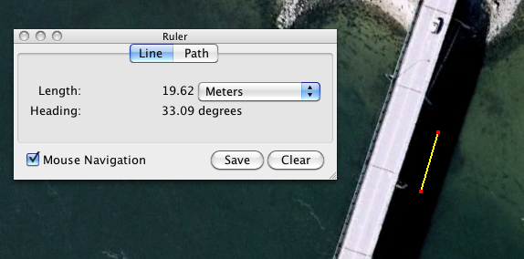
<br /><br />
The above tight squeeze is circled in the following EarthNC Online image:
<br /><br />
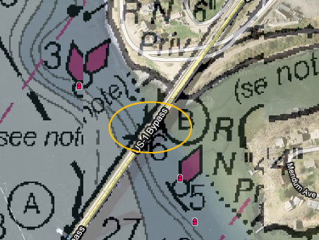
<br /><br />
If the notice was to be used for a berth, it is going to be hard to distinguish these two:
<br /><br />
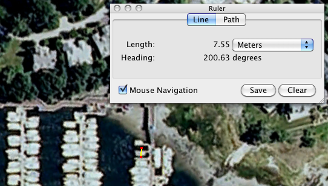
</div>
</div>

<div class="posted">
<br />Posted by <span class="item-creator">Kurt</span>
| <a class="link" href="2010-09.html#e2010-09-07T08_23_52.txt">Permalink</a>

<!-- <br /><a href="archives/2010-09-08T08_05_06.html#comments">Comments</a> -->
</div>
</div>
<div class="item">
<a id="e2010-09-06T17_44_12.txt" name="e2010-09-06T17_44_12.txt"></a>
<h2 class="date">09.06.2010 17:44</h2>
<div class="blogbody">
<h3 class="title">Switching from svn to git - Part 2</h3>
<div class="item-description">
When reading this, please realize that I'm a beginner at git and might
not be following best practices.
<br /><br />
Here is a bit of what I am going through to get my source code more
out there in the world.  I've missed a number of collaboration
opportunities because my code was squirreled away in CCOM
repositories.  If this code is not mixing it up in the community, I am
failing at my job.  I thought about using Google to host my project,
but was surprised to see that they "only" offer <a
href="http://subversion.apache.org/">Subversion (svn)</a> and <a
href="http://mercurial.selenic.com/">Mercurial (HG)</a> (Google's <a
href="http://code.google.com/p/support/wiki/ChoosingAVersionControlSystem">Choosing
A Version Control System</a>).  It is pretty wild that Google will
give you 2GB of project hosting space.  I'm following a mixture of
instructions from <a
href="http://www.weask.us/entry/migrate-svn-history-git-repository">How
to migrate SVN with history to a new Git repository?</a>, <a
href="http://progit.org/book/">Pro Git</a> and the GitHub directions
that appear when you create a new repo (aka repository).
<br /><br />
First, I have to setup my mac for git.  If you are not using a mac, you
will need to install git some other way.
<pre><b>fink install git git-svn git-mode</b> # git-mode is for emacs
<b>git config --global user.name "Kurt Schwehr"
git config --global user.email schwehr gmail.com</b> # Except there is an @ there when I typed it
<b>git config --global core.editor emacs
git config --global merge.tool opendiff</b> # opendiff is a mac specific graphical tool
<b>git config --global core.excludesfile ~/.gitignore</b>
<b>git config --list</b> # Check the settings</pre>
Now I need to pull my old code from the svn repository.  Hopefully I'm doing this right.
The old repository is locked down so that it is only accessible by people with a CCOM
account.  Not good.  Even if I made this part of the tree public, it wouldn't be possible
to manage code submissions from others.
<pre><b>git svn clone https://cowfish.unh.edu/projects/schwehr -T trunk/src/libais libais</b>
Initialized empty Git repository in /Users/schwehr/Desktop/foo/libais/.git/
W: Ignoring error from SVN, path probably does not exist: (175002): RA layer request failed: REPORT of '/projects/schwehr/!svn/bc/100': Could not read chunk size: Secure connection truncated (https://cowfish.unh.edu)
W: Do not be alarmed at the above message git-svn is just searching aggressively for old history.
This may take a while on large repositories
Checked through r2000   <i># This took a while across the network to go through 12K changes</i>
Checked Ahrough ais_pos.cpp
r13581 = 61caae999122714e5ac2af4e60b0c798e2e51b08 (refs/remotes/trunk)
	A	ais.h
	A	ais123.cpp
	D	ais_pos.cpp
W: -empty_dir: trunk/src/libais/ais_pos.cpp
r13600 = 9ca2bccd11b9fcbb0ae978efc49dfe2ad0df52cd (refs/remotes/trunk)
	M	ais.h
	A	ais4_11.cpp
...
r14083 = c2c949807f3c6dcad9a235c81e67e6629a287a54 (refs/remotes/trunk)
	M	ais15.cpp
r14085 = 089da02b8d742ca472baa5eabebd19d06a259cf0 (refs/remotes/trunk)
Checked out HEAD:
  https://cowfish.unh.edu/projects/schwehr/trunk/src/libais r14085
</pre>
Before going to the next step, I should make sure that everything will be alright.
<pre>
<b>cd libais</b>
<b>gitk</b> # Run the GUI built into git (see the screen shot)
<b>git remote -v</b>
origin	git@github.com:schwehr/libais.git (fetch)
origin	git@github.com:schwehr/libais.git (push)
<b>git status</b>
# On branch master
nothing to commit (working directory clean)
<b>git log | head</b>
commit 089da02b8d742ca472baa5eabebd19d06a259cf0
Author: schwehr <schwehr@a19cddd1-5311-0410-bb07-9ca93daf0f0b>
Date:   Wed Jul 7 22:53:29 2010 +0000
<!-- -->
    compiles but does not work
<!-- -->    
    git-svn-id: https://cowfish.unh.edu/projects/schwehr/trunk/src/libais@14085 a19cddd1-5311-0410-bb07-9ca93daf0f0b
<!-- -->
commit c2c949807f3c6dcad9a235c81e67e6629a287a54
Author: schwehr <schwehr@a19cddd1-5311-0410-bb07-9ca93daf0f0b></pre>
Here is what gitk looks like on the mac:
<br /><br />
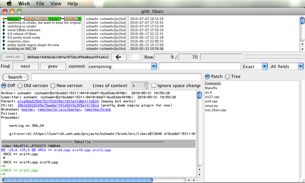
<br /><br />
Add one of my ssh public keys to git hub's account page <a
href="https://github.com/account#keys">https://github.com/account#keys</a>
by pasting in the text from ~/.ssh/id_dsa.pub assuming you've already
made a passwordless ssh key using the ssh-keygen command.
Now I am ready to push the code to github.
<pre><b>git remote add origin git@github.com:schwehr/libais.git
git push origin master</b>
The authenticity of host 'github.com (207.97.227.239)' can't be established.
RSA key fingerprint is 16:27:ac:a5:76:28:2d:36:63:1b:56:4d:eb:df:a6:48.
Are you sure you want to continue connecting (yes/no)? yes
Warning: Permanently added 'github.com,207.97.227.239' (RSA) to the list of known hosts.
Counting objects: 340, done.
Delta compression using up to 2 threads.
Compressing objects: 100% (331/331), done.
Writing objects: 100% (340/340), 135.41 KiB, done.
Total 340 (delta 241), reused 0 (delta 0)
To git@github.com:schwehr/libais.git
 * [new branch]      master -> master</pre>
View the results: <a href="http://github.com/schwehr/libais">http://github.com/schwehr/libais</a>
</div>
</div>

<div class="posted">
<br />Posted by <span class="item-creator">Kurt</span>
| <a class="link" href="2010-09.html#e2010-09-06T17_44_12.txt">Permalink</a>

<!-- <br /><a href="archives/2010-09-07T08_23_52.html#comments">Comments</a> -->
</div>
</div>
<div class="item">
<a id="e2010-09-04T15_30_06.txt" name="e2010-09-04T15_30_06.txt"></a>
<h2 class="date">09.04.2010 15:30</h2>
<div class="blogbody">
<h3 class="title">Switching from svn to git - Part 1: Background</h3>
<div class="item-description">
I need to switch some of my code from my CCOM SVN out to public
repositories.  I really wanted to go to <a
href="http://mercurial.selenic.com/">Mercurial (HG)</a> [<a
href="http://hginit.com/">hginit</a>], but it looks like the best
thing to do is to go with git.
<br /><br />
I recommend (as much as I can as a beginner to git) watching these and reading Chapter 2 of <a href="http://progit.org/book/">Pro Git</a>., which is free online.
<br /><br />
Randall Schwarts does a good job of <a href="http://twit.tv/FLOSS">TWIT FLOSS</a>.  He gave a Google Tech Talk: <a href="http://www.youtube.com/watch?v=8dhZ9BXQgc4">git</a>
<br /><br />
An hour long introduction to Git:
<br /><br />
<object width="640" height="385"><param name="movie" value="http://www.youtube.com/v/j45cs5_nY2k?fs=1&amp;hl=en_US"></param><param name="allowFullScreen" value="true"></param><param name="allowscriptaccess" value="always"></param><embed src="http://www.youtube.com/v/j45cs5_nY2k?fs=1&amp;hl=en_US" type="application/x-shockwave-flash" allowscriptaccess="always" allowfullscreen="true" width="640" height="385"></embed></object>
<br /><br />
Looks good, but the audio is painful:
<br /><br />
<object width="480" height="385"><param name="movie" value="http://www.youtube.com/v/OFkgSjRnay4?fs=1&amp;hl=en_US"></param><param name="allowFullScreen" value="true"></param><param name="allowscriptaccess" value="always"></param><embed src="http://www.youtube.com/v/OFkgSjRnay4?fs=1&amp;hl=en_US" type="application/x-shockwave-flash" allowscriptaccess="always" allowfullscreen="true" width="480" height="385"></embed></object>
</div>
</div>

<div class="posted">
<br />Posted by <span class="item-creator">Kurt</span>
| <a class="link" href="2010-09.html#e2010-09-04T15_30_06.txt">Permalink</a>

<!-- <br /><a href="archives/2010-09-06T17_44_12.html#comments">Comments</a> -->
</div>
</div>
<div class="item">
<a id="e2010-09-03T14_09_46.txt" name="e2010-09-03T14_09_46.txt"></a>
<h2 class="date">09.03.2010 14:09</h2>
<div class="blogbody">
<h3 class="title">AIS ATON and not Google Fusion Tables</h3>
<div class="item-description">
<a href="http://tables.googlelabs.com/Home">Google Fusion Tables</a> -
I wish I were playing with this.
<br /><br />
But instead, I'm working on the AIS ATON replacement for the USCG and
NOAA that will go out at Cape Cod to replace the CNS6000 Class A
transponder with the Blue Force (BF) firmware.
<br /><br />
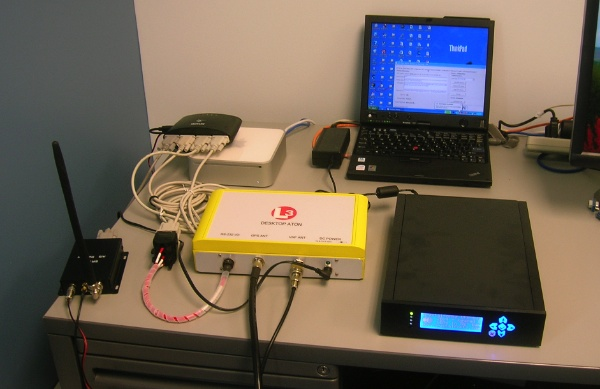
<br /><br />
The one big drawback of the L3 unit is that it does not come with the
connector to let you get at the serial ports.  It turns out that this
is an additional $330 to get at the 3 RS232 serial ports and it is
really fragile.  You can see here that Andy M has worked hard to
protect the cables so that I don't break them.  He added a flexable
wrap and taped the 3 serial ports together.  Why couldn't there just be 3
9 pin D-Shell connectors?  They are cheap and they work great.
<br /><br />
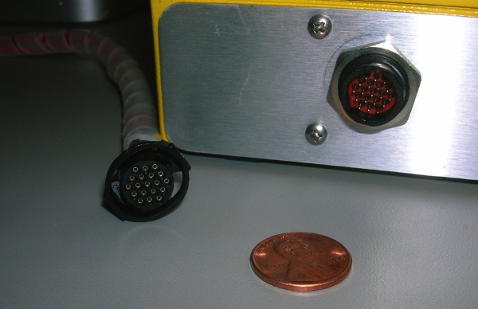
<br /><br />
A quick snippet of what I get back from the unit... First on P3, I get
the normal NMEA response.  Then the unit powers on, I get something
like this before it has got a GPS lock:
<pre>!ANVDO,1,1,,X,E00VT:QVIgPb7W00000000000006NAc0J2@`000000wP40,4*19,rccom-office-l3-3,1283538265.16
$ANALR,000000.00,007,A,V,AIS: UTC Lost*75,rccom-office-l3-3,1283538265.49
$ANADS,L3 AIS ID,,A,4,I,N*02,rccom-office-l3-3,1283538265.5
!ANVDO,1,1,,X,E00VT:QVIgPb7W00000000000006NAc0J2@`000000wP40,4*19,rccom-office-l3-3,1283538268.17
!ANVDO,1,1,,X,E00VT:QVIgPb7W00000000000006NAc0J2@`000000wP40,4*19,rccom-office-l3-3,1283538271.17
!ANVDO,1,1,,X,E00VT:QVIgPb7W00000000000006NAc0J2@`000000wP40,4*19,rccom-office-l3-3,1283538274.16
!ANVDO,1,1,,X,E00VT:QVIgPb7W00000000000006NAc0J2@`000000wP40,4*19,rccom-office-l3-3,1283538277.16
!ANVDO,1,1,,X,E00VT:QVIgPb7W00000000000006NAc0J2@`000000wP40,4*19,rccom-office-l3-3,1283538280.16
!ANVDO,1,1,,X,E00VT:QVIgPb7W00000000000006NAc0J2@`000000wP40,4*19,rccom-office-l3-3,1283538283.16
!ANVDO,1,1,,X,E00VT:QVIgPb7W00000000000006NAc0J2@`000000wP40,4*19,rccom-office-l3-3,1283538286.16
!ANVDO,1,1,,X,E00VT:QVIgPb7W0000000000000=M`MQ&lt;Em9H00000bh40,4*5F,rccom-office-l3-3,1283538289.16
!ANVDO,1,1,,X,E00VT:QVIgPb7W0000000000000=M`MP&lt;Em9P00000d@40,4*68,rccom-office-l3-3,1283538292.17
!ANVDO,1,1,,X,E00VT:QVIgPb7W0000000000000=M`MP&lt;Em9p00000eh40,4*61,rccom-office-l3-3,1283538295.17
$ANALR,000000.00,007,A,V,AIS: UTC Lost*75,rccom-office-l3-3,1283538295.66
$ANADS,L3 AIS ID,,A,4,I,N*02,rccom-office-l3-3,1283538295.67
$ANALR,182515.00,007,V,V,AIS: UTC Lost*68,rccom-office-l3-3,1283538297.67
!ANVDO,1,1,,X,E00VT:QVIgPb7W0000000000000=M`MN&lt;Em:h00000g@00,4*4A,rccom-office-l3-3,1283538298.17</pre>
The last two lines are the unit getting a GPS fix.  Here is the message decoded:
<pre><b>./ais_msg_21_handcoded.py</b> -d '!ANVDO,1,1,,X,E00VT:QVIgPb7W0000000000000=M`MN&lt;Em:h00000g@00,4*4A'
AidsToNavReport:
	MessageID:           21
	RepeatIndicator:     0
	UserID:              631850
	type:                3
	name:                L3-ATON@@@@@@@@@@@@@
	PositionAccuracy:    0
	longitude:           -70.9395767
	latitude:            43.1352900
	dimA:                0
	dimB:                0
	dimC:                0
	dimD:                0
	FixType:             1
	timestamp:           30
	OffPosition:         True
	status:              0
	RAIM:                False
	virtual_aton_flag:   False
	assigned_mode_flag:  False
	spare:               0
	spare2:              0</pre>
The unit then goes to sleep and only turns on for transmitting:
<pre>!ANVDO,1,1,,X,E00VT:QVIgPb7W0000000000000MM`MC&lt;Em;`00000Sh60,4*24,rccom-office-l3-3,1283538589.75
$ANALR,183007.01,007,V,V,AIS: UTC Lost*6E,rccom-office-l3-3,1283538590.93
$ANZDA,183010.00,03,09,2010,00,00*7C,rccom-office-l3-3,1283538592.21
!ANVDO,1,1,,Y,E00VT:QVIgPb7W0000000000000MM`MG&lt;Em&lt;000000U@20,4*5C,rccom-office-l3-3,1283538592.75
$ANZDA,183012.00,03,09,2010,00,00*7E,rccom-office-l3-3,1283538594.21
!ANVDO,1,1,,A,E00VT:QVIgPb7W0000000000000MM`ML&lt;Em&lt;P00000Vh20,4*04,rccom-office-l3-3,1283538595.53</pre>
</div>
</div>

<div class="posted">
<br />Posted by <span class="item-creator">Kurt</span>
| <a class="link" href="2010-09.html#e2010-09-03T14_09_46.txt">Permalink</a>

<!-- <br /><a href="archives/2010-09-04T15_30_06.html#comments">Comments</a> -->
</div>
</div>
<div class="item">
<a id="e2010-09-01T17_13_57.txt" name="e2010-09-01T17_13_57.txt"></a>
<h2 class="date">09.01.2010 17:13</h2>
<div class="blogbody">
<h3 class="title">Open Source and GSF - the "Generic Sensor Format" for multibeam sonars</h3>
<div class="item-description">
If you feel a need to discuss this, you can do so <a href="http://schwehr.blogspot.com/2010/09/open-source-and-gsf-generic-sensor.html">here</a>.
<br /><br />
I am repeating myself... see <a href="../archives/2008-10.html#e2008-10-25T08_23_22.txt">Generic Sensor Format (GSF) Meeting</a> (Sept 2008).
<br /><br />
What makes open source software successful is a community that
contributes back to the code base to make it better.  Val is making a
huge step towards that for the multibeam Generic Sensor Format by
working on a sidescan addition to the format and posting about how to
use <a href="http://www.saic.com/maritime/gsf/">GSF</a>: <a
href="http://www.aliceandval.com/valswork/blog/archives/2010/09/01/a_gsf_primer/index.html">A GSF Primer</a>.  Val even called for a code review.  Yesterday, 5 of
us sat down with Val and the code to give it a look.  Many eyes for
review is a great thing (unlike design by committee, which typically
makes everyone equally unhappy).
<br /><br />
That said, I worry about people using GSF as an archive or interchange
format for multibeam sonar data right now.  Here are some of the
issues, some of which can be fixed and others that are intrinsic to
the design.  There needs to be open discussion and I argue that the
original data (pre GSF) and the code that generated that data need to
be archived.
<br /><br />
First, the name implies that it is a "generic" format, but if you look
into the code.  One look at the <b>gsfSensorSpecific struct</b> should
put this question to rest.  There is a huge amount of information in a
GSF file that is not generic.  For some vendors, there are even
multiple model specific structures (I count 7 for
Simrad/EM/Kongsberg).  This comes from the rapid evolution of sonars
since GSF was first started in the early 1990's (I see a first date of
1994).  If we really do want to have a generic sonar format, I think
we need to design a series of new messages that cover the basic
multibeam and back scatter data returned such that we don't need these
vendor specific payloads.  How does the MGD77 format need a special
case???  This is just x, y, z, depth, gravity, and magnetic field.
The 77 means 1977.  This format has been around for a long time.
<br /><br />
The next thing that is needed is a major code over hall.  This would
entail distributing a better build system (maybe CMake) that builds
proper libraries for all the major architectures.  As a part of this,
GSF needs a series of unit tests that take a very wide range of sample
multibeam files and convert them to a GSF file.  Then read these back
in and verify that the resulting GSF file makes sense.  Even simpler
yet, we need code that exercises all of the GSF code base that
doesn't need large input files to test it.  This unit test suit needs
to be public and the non-input-file based code should be a part of the
standard build process - aka <a
href="http://en.wikipedia.org/wiki/Unit_testing">unit testing</a>.
These unit tests also serve a second purpose of providing
documentation for how the library should be used.  To go along with
this code base update, the library should be put into the major linux
distributions as a standard package.  This will mean that the library
can't be called "libgsf" as that conflicts with the libgsf that is the
GNOME Structured File library.  Gnome is going to trump the sonar
library for Ubuntu, Debian, RedHat, etc.
<br /><br />
The next code update would be to have functions that can do very basic
validation of every structure that is passed around the GSF library.
Client code can then call these to verify that they are, at least at a
basic level, passing in data that makes sense.  There is still tons of
room for errors, but if roll is +/- 180 degrees, we should not pass in
a roll of 720 degrees.  NOTE: roll right now is +/- 90 degrees, which
will cause trouble for vehicles under overhangs (e.g. under ice, under
ships, or in caves).  The no data value for roll is 99.0.  That is
going to be a problem.  I guess we can have rolls that go from -270 to
+90 to get around this.
<br /><br />
We also need to look at the performance of GSF.  A mmap implementation
of GSF would likely be much faster.  What else can be done to speed up
the code?  We should discuss the idea of a SQLite standard 2nd file to
go along with GSF and other multibeam log files that is similar to
what MBSystem does.  If is contains the basic metadata and possibly a
prebuild index of packets, anything beyond the first pass of a GSF
file will go much faster. An example would be pulling the navigation
and sound velocity profiles (SVP) from the tail of the prior log file,
would be faster if the file was already indexed in a standard way.
<br /><br />
A final step of the code update would be to turn on all the major
compiler warnings and fix them.  At least -Wall for gcc should return
no warnings.  There appear to be headers that should be included and
lots of point magic that works right now, but should be better
documented so compilers can check any code changes.  Also, the readers
and writers should probably be switched to use a set of inline
functions that do type checking that wrap the byte swapping and memcpy
packing.  Is the code totally 32 and 64 bit safe for all execution
paths???
<br /><br />
A very useful addition would be to package native reader/writer
interfaces the common languages used by people who process this kind
of data.  This means having perl, python, and matlab interfaces.  This
should be a part of GSF and distributed along side.  I know many
people who have written their own interfaces to GSF and, while that is
instructional to create one, at least one for each major language should
be included in the distribution.
<br /><br />
Finally, the documentation that goes with GSF needs to be updated.  I
have heard from several people who have written GSF code that the
documentation is not enough to write a working encoder/decoder.
Missing from the specification document are a lot of the motivations
behind these packets.  SAIC has put 16 years of hard work into GSF and
learned a lot of lessons that can benefit the whole sonar community.
We need to capture this.
<br /><br />
It is super important to note that SAIC is only able to work on GSF
based on its contracts with the US Navy.  Either someone needs to pay
SAIC to do some of this work or we, as a community, need to get
cracking on this if GSF is going to have staying power.  The same goes
for MBSystem and other critical software.  The lead authors are up to
their eyeballs in work.  This is a plea for the community to jump in.
I try to contribute back as much as possible, but am maxed out.  Find
any nitch and pitch in.  It doesn't matter if your contribution is
large or small.  Code, documentation, translating documentation to
other languages, quality bug reports, building test cases, even just
learning the tools and how they work... it's all important.
</div>
</div>

<div class="posted">
<br />Posted by <span class="item-creator">Kurt</span>
| <a class="link" href="2010-09.html#e2010-09-01T17_13_57.txt">Permalink</a>

<!-- <br /><a href="archives/2010-09-03T14_09_46.html#comments">Comments</a> -->
</div>
</div>
</div>

</div>

<div id="links">

<div class="calendar">
<table border="0" cellspacing="4" cellpadding="0" summary="Calendar with links to days with entries">
<caption class="calendarhead">September 2010</caption>
<tr>
<th align="center"><span class="calendarday">Su</span></th>
<th align="center"><span class="calendarday">Mo</span></th>
<th align="center"><span class="calendarday">Tu</span></th>
<th align="center"><span class="calendarday">We</span></th>
<th align="center"><span class="calendarday">Th</span></th>
<th align="center"><span class="calendarday">Fr</span></th>
<th align="center"><span class="calendarday">Sa</span></th>
</tr>
<tr>
<td align="center"></td> <td align="center"></td> <td align="center"></td>        
<td align="center"><span class="calendar"><a href="2010-09.html#e2010-09-01T17_13_57.txt">1</a></span></td>
<td align="center"><span class="calendar">2</span></td>
<td align="center"><span class="calendar"><a href="2010-09.html#e2010-09-03T14_09_46.txt">3</a></span></td>
<td align="center"><span class="calendar"><a href="2010-09.html#e2010-09-04T15_30_06.txt">4</a></span></td>
</tr>
<tr>
           
<td align="center"><span class="calendar">5</span></td>
<td align="center"><span class="calendar"><a href="2010-09.html#e2010-09-06T17_44_12.txt">6</a></span></td>
<td align="center"><span class="calendar"><a href="2010-09.html#e2010-09-07T08_23_52.txt">7</a></span></td>
<td align="center"><span class="calendar"><a href="2010-09.html#e2010-09-08T21_17_42.txt">8</a></span></td>
<td align="center"><span class="calendar"><a href="2010-09.html#e2010-09-09T19_24_46.txt">9</a></span></td>
<td align="center"><span class="calendar">10</span></td>
<td align="center"><span class="calendar">11</span></td>
</tr>
<tr>
      
<td align="center"><span class="calendar"><a href="2010-09.html#e2010-09-12T08_42_42.txt">12</a></span></td>
<td align="center"><span class="calendar">13</span></td>
<td align="center"><span class="calendar">14</span></td>
<td align="center"><span class="calendar"><a href="2010-09.html#e2010-09-15T10_56_05.txt">15</a></span></td>
<td align="center"><span class="calendar"><a href="2010-09.html#e2010-09-16T18_42_43.txt">16</a></span></td>
<td align="center"><span class="calendar"><a href="2010-09.html#e2010-09-17T12_09_40.txt">17</a></span></td>
<td align="center"><span class="calendar">18</span></td>
</tr>
<tr>
      
<td align="center"><span class="calendar">19</span></td>
<td align="center"><span class="calendar">20</span></td>
<td align="center"><span class="calendar">21</span></td>
<td align="center"><span class="calendar"><a href="2010-09.html#e2010-09-22T18_03_45.txt">22</a></span></td>
<td align="center"><span class="calendar"><a href="2010-09.html#e2010-09-23T17_11_44.txt">23</a></span></td>
<td align="center"><span class="calendar">24</span></td>
<td align="center"><span class="calendar">25</span></td>
</tr>
<tr>
    
<td align="center"><span class="calendar"><a href="2010-09.html#e2010-09-26T21_42_42.txt">26</a></span></td>
<td align="center"><span class="calendar"><a href="2010-09.html#e2010-09-27T22_01_33.txt">27</a></span></td>
<td align="center"><span class="calendar"><a href="2010-09.html#e2010-09-28T17_42_54.txt">28</a></span></td>
<td align="center"><span class="calendar">29</span></td>
<td align="center"><span class="calendar">30</span></td>
</tr>
</table>
</div>

</div>

<br clear="all" />

</body>
</html>
